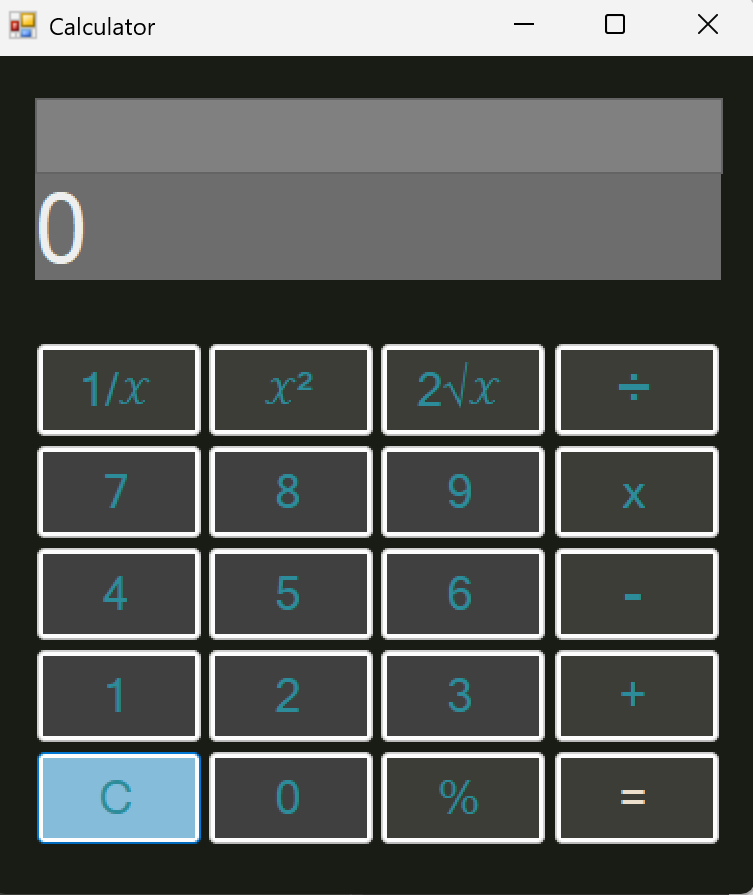
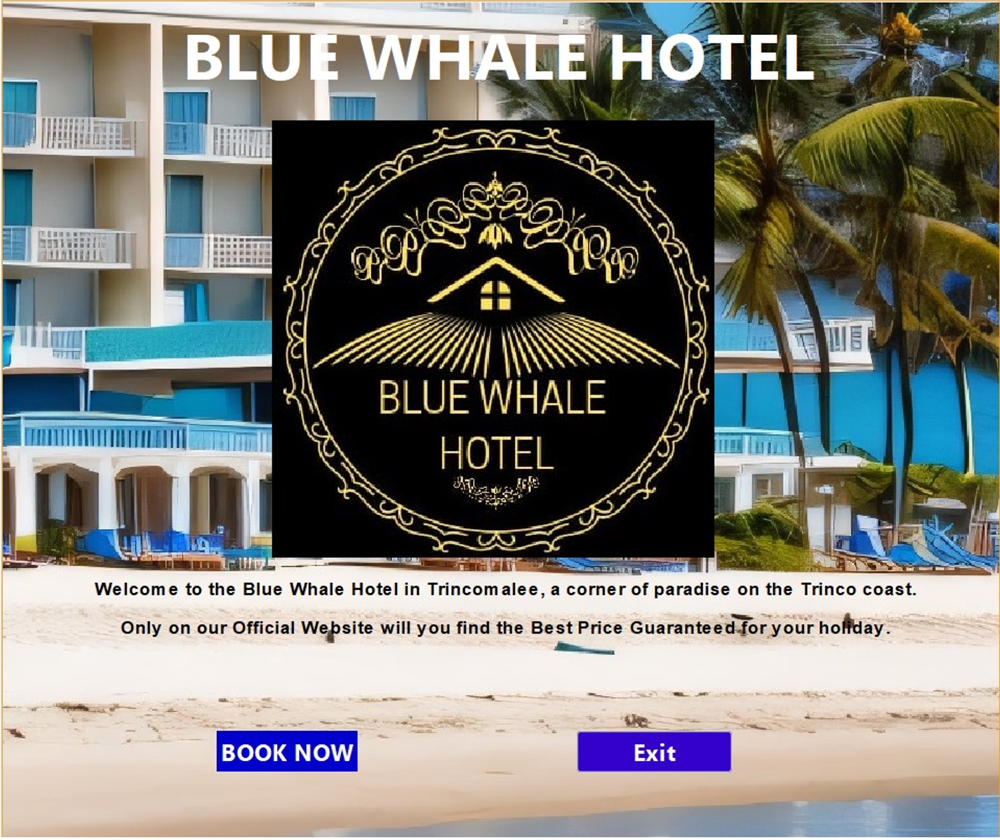
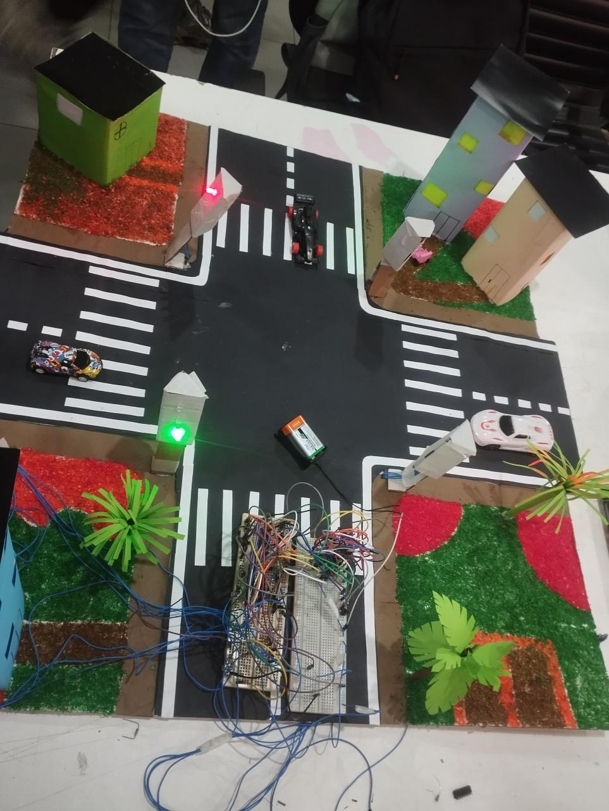
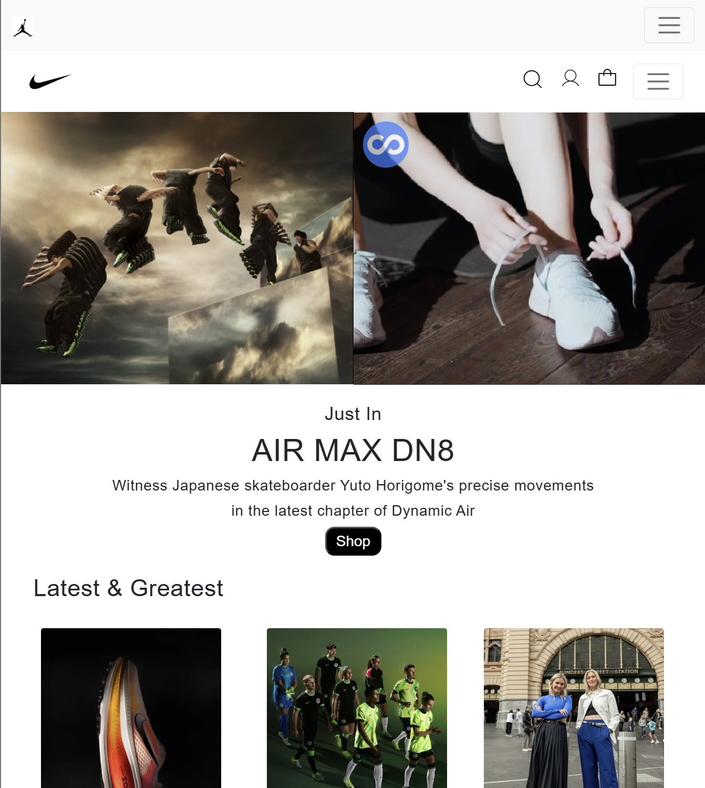
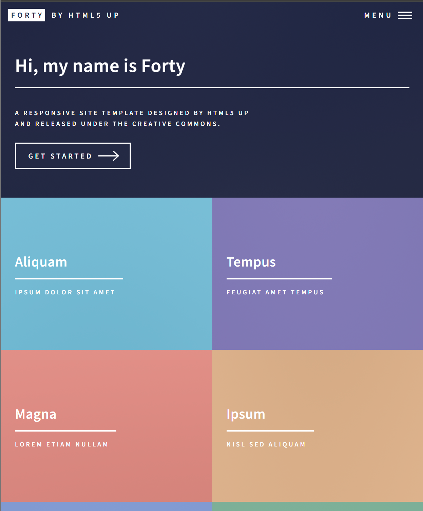

Here are some of the projects I've completed over the past few years.
| Project Number | Project Name | Project Description | Project Image |
|---|---|---|---|
| 1 | Simple Calculator Project |
A versatile calculator application built in C# that performs a range of operations, from basic arithmetic to advanced mathematical functions. This project was part of an independent coding challenge, inspired by my partner to each create our own version of a calculator and explore different functionalities.
Key Features Core Arithmetic: Addition, Subtraction, Multiplication, Division Additional Calculations: Percentage, Reciprocal, Square, Square Root This project highlights the potential of C# for creating practical applications and was a rewarding challenge in building a user-friendly, feature-rich calculator from scratch. GitHub Repository |
 |
| 2 | Java Swing Project |
The Blue Whale Hotel Reservation System GUI was developed as part of my Object-Oriented Programming module at NIBM for my Diploma in Software Engineering.
The GUI includes a range of features designed for a seamless user experience. It offers a user-friendly interface that ensures easy navigation, making it accessible for everyone. The system provides convenient booking and cancellation functionalities, and with user authentication implemented, it ensures secure access to user accounts. Additionally, the application integrates with a database for reliable data persistence, ensuring that all information is safely stored and easily retrievable.
Technologies Used: ● Java ● Java Swing ● MySQL ● JDBC for database connectivity Java programming and object-oriented programming (OOP) principles were utilized to build the application to keep the code organized. Database management played a crucial role in storing and retrieving data efficiently. GitHub Repository |
 |
| 3 | Traffic Light System Prototype | Developed a traffic light system prototype as part of the Digital Logics and Circuits module for the Diploma in Software Engineering at the National Institute of Business Management (NIBM). The project aimed to address traffic congestion at a four-way intersection in Sri Lanka. We utilized ICs and logic gates, including AND, OR, and NOT gates, along with a 555 Timer IC and a decade counter to create a time-based control system for the traffic lights.
Key Components: Quad AND gate (7408), Quad OR gate (7432), Hex Inverter (7404), NOR gate (7402) 555 Timer IC, Decade counter (4017) LEDs (Red, Yellow, Green), Resistors, Capacitors, Voltage Regulator Achievement: Earned an A+ for the project following a successful presentation and viva. |
 |
| 4 | Nike Website UI Clone | Developed a responsive Nike Website UI Clone as part of completing the Web Development Module during the Orientation 𝗣𝗿𝗼𝗴𝗿𝗮𝗺 at the University of Moratuwa. This front-end project was built using HTML, CSS, JavaScript, and Bootstrap, and it replicates core pages inspired by the official Nike Australia website.
Key Features: ● Landing Page with promotional banners ● Sections for Men, Women, and Kids ● Two-step Sign-Up Flow (Profile + Registration) ● Fully responsive design using Bootstrap 5 ● External hosting for images and videos via ImgBB and Streamable GitHub Repository Live Demo |  |
| 5 | HTML5 UP Forty Website UI Clone | Created a clone of the Forty theme by HTML5 UP, a responsive, modern portfolio template. This project highlights my web development skills and demonstrates my ability to work with HTML5, CSS3, and responsive design principles.
Key Features: ● Responsive Design: Fully optimized for mobile, tablet, and desktop views. ● Modern Aesthetic: Sleek, minimal design that adapts to any screen size. ● Customizable: Built using a flexible template, ready for personalization (e.g., adding real content, portfolio pieces, etc.). ● Smooth Animations: Subtle transitions and hover effects for improved UX. GitHub Repository Live Demo |  |